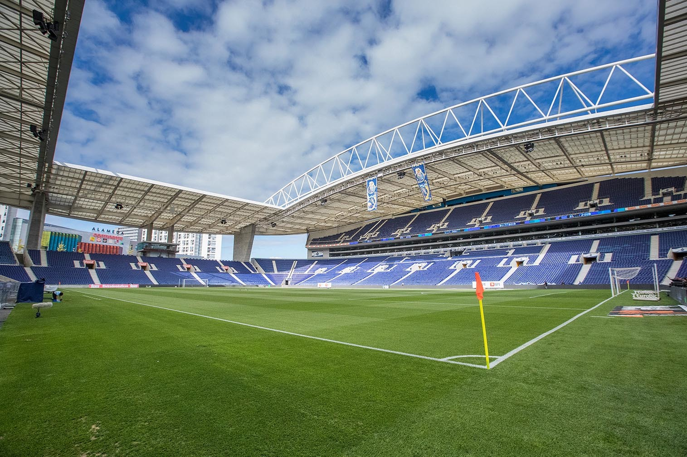
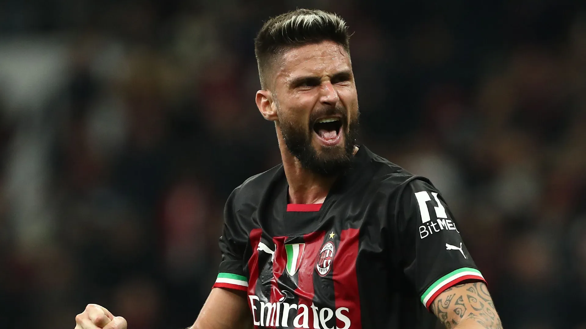

Oq devemos saber sobre FC Porto FC Porto ou simplesmente Porto, é um clube multidesportivo português sedeado na cidade do Porto. É mais conhecido pela sua equipa de futebol profissional, que joga atualmente na Primeira Liga, a competição mais importante do futebol português. Foi campeão nacional em 30 ocasiões, venceu a Liga dos Campeões 2 vezes e foi 2 vezes Campeão do Mundo de Clubes. Fundado a 28 de setembro de 1893, é um dos "três grandes" clubes de Portugal, juntamente com o Sporting e o Benfica, os seus grandes rivais. O clube nunca foi despromovido do campeonato desde que este foi estabelecido em 1934. As alcunhas da equipa são "dragões", nome da criatura mitológica que se pode ver no topo do brasão do clube, ou "azuis e brancos", que está baseada na associação às cores do equipamento principal. Os seus apoiantes são chamados de "portistas". Os seus jogos de futebol em casa são realizados no Estádio do Dragão, inaugurado em 2003 e que tem uma capacidade de 50 033 lugares, e que substituiu o antigo Estádio das Antas. Já para as modalidades, é no Dragão Arena, com uma capacidade de 2 179 lugares, que se joga o hóquei em patins, o basquetebol e o andebol.
Ver mais sobre FC Porto  Giroud teve um início de carreira com passagens por clube de menor expressão do seu país natal, a França, como Grenoble e Tours, onde obteve algum êxito atuando pela Ligue 2, a segunda divisão francesa. Fixado como uma das peças de destaque do Tours, Giroud foi eleito o melhor jogador da temporada 2009–10 na Ligue 2, despertando a atenção do Montpellier, clube de maior expressão em relação aos que já havia atuado e que, promovido à primeira divisão no ano anterior (na temporada 2008–09), o contratou em 1 de julho de 2010. Atuando pelo Montpellier, Giroud não conseguiu grande destaque em sua primeira temporada, 2010–11. O destaque viria na temporada seguinte, quando foi o artilheiro do campeonato e principal jogador da campanha do título da equipe na Ligue 1 2011-12, a primeira conquista na história do Montpellier. Na liga, Olivier marcou um total de 21 gols em 36 jogos, incluindo alguns hat-tricks como contra o Sochaux e o Dijon, e somando-se a mais nove assistências para gol. Durante a temporada, em meio a várias especulações acerca do futuro clube do atacante, dentre elas o Newcastle, o proprietário do clube Louis Nicollin chegou a declarar que Giroud não seria vendido "por menos de 50 ou 60 milhões de euros".